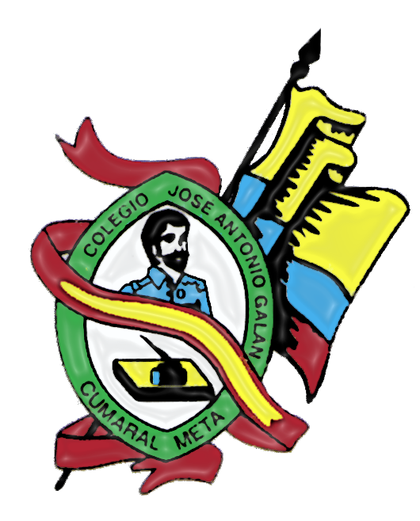

La institución educativa JOSE ANTONIO GALAN de Cumaral Meta garantiza el ingreso y la permanencia con equidad al sistema educativo. Forma lideres capaces de resolver con sentido critico los problemas y retos que la vida le plantea, a partir de la adquisición de saberes valores, el desarrollo de habilidades y la interacción con su entorno social; desde la implementación de proyectos pedagógicos que favorecen el cuidado del medio ambiente, el apoyo de talentos, la sana convivencia, entre otros, y la transversalización con las diferentes áreas del conocimiento.
VISIÓN
Seremos una de las mejores Instituciones Educativas del departamento del Meta, reconocida por su liderazgo en la prestación del servicio educativo, en acciones pedagógicas e inclusivas orientadas a la formación integral de los estudiantes; de manera que trascienda en el avance del conocimiento, la cultura, el deporte, la tecnología, la investigación y la protección del medio ambiente, con impacto en el progreso social, local, regional y nacional.
VALORES
- Responsabilidad
- Respeto
- Honestidad
- Tolerancia
- Equidad
- Alteridad
MODELO PEDAGÓGICO
La institución educativa José Antonio Galán de Cumaral Meta tiene un enfoque pedagógico constructivista y socio-crítico que promueve la participación activa de los estudiantes en su proceso de aprendizaje, fomentando su capacidad de reflexión, análisis y crítica. Se busca desarrollar habilidades para la resolución de problemas, la toma de decisiones, la comunicación efectiva y el trabajo en equipo. Además, se fomenta la conciencia crítica y compromiso social de los estudiantes, haciéndolos participar en proyectos y actividades que contribuyan al bienestar de la comunidad. El objetivo principal es desarrollar habilidades y competencias para la vida, y formar individuos comprometidos con la sociedad y su entorno.
ORGANIGRAMA
Una institución educativa típicamente tiene una estructura jerárquica con el director o rector en la cima, seguido por otros cargos de liderazgo y personal docente dividido por departamentos o áreas de enseñanza. Cada departamento está liderado por un coordinador o jefe de departamento que supervisa a los maestros. También hay personal administrativo y de apoyo, como secretarias, bibliotecarios y conserjes. Todos trabajan juntos para mantener el buen funcionamiento de la institución educativa.
ESCUDO

Está conformado por un ovalo ancho de color verde, símbolo de la llanura, la esperanza y los triunfos de la juventud estudiosa, el óvalo lleva la cara del líder comunero de quien tomamos el nombre de la Institución Educativa José Antonio Galán, lo acompañan un libro y un tintero con una pluma símbolo de la ciencia, la sabiduría y el arte de escribir, se entrelaza un festón rojo y amarillo dándole un tono de alegría e inteligencia aspectos característicos de los estudiantes Galanistas y lo adorna el tricolor Nacional.
BANDERA
La bandera de nuestra Institución consta de dos franjas una de color verde y la otra blanca. El color verde ocupa las dos terceras partes que representan el crecimiento y la esperanza de nuestros jóvenes frente al mundo que los rodea y el color blanco representa el optimismo, la bondad y la perfección de toda la comunidad educativa Galanista.
HIMNO
Coro Siento orgullo gritar: ¡Soy galanista!
Defensor de las causas que nos unen,
siento orgullo gritar: ¡Soy galanista!
El Galán es mi luz, ¡viva su lumbre!
Canto al sol que asoma en las mañanas,
al crisol de la ciencia y sus linderos,
al colegio que evoca las campañas
de Galán, el valiente comunero.
Eres flor, juventud, algarabía
cantera de valores y costumbres,
fuego intenso, virtud, autonomía,
caminos que nos llevan a la cumbre.
(Coro)
Siento orgullo gritar: ¡Soy galanista!
Defensor de las causas que nos unen,
siento orgullo gritar: ¡Soy galanista!
El Galán es mi luz, ¡viva su lumbre!
Cumaral es el cielo en que destellas
verdad, amor, alegre vestidura,
deportistas que suman mil estrellas,
lunadas y derroche de cultura.
En tus aulas se pulen los linajes
que ostentan banderas coloridas,
defendemos el agua y el paisaje
origen y sustento de la vida.
(Coro)
Siento orgullo gritar: ¡Soy galanista!
Defensor de las causas que nos unen,
siento orgullo gritar: ¡Soy galanista!
El Galán es mi luz, ¡viva su lumbre!
SENA
El Servicio Nacional de Aprendizaje (SENA) es un establecimiento público de educación en Colombia que ofrece programas técnicos, tecnológicos y complementarios gratuitos. Está adscrito al Ministerio del Trabajo y tiene autonomía administrativa. Su oferta regular incluye más de 522 programas de formación profesional para técnicos, tecnólogos y trabajadores especializados.
ESLOGAN
El SENA se enfoca actualmente en el emprendimiento como respuesta a la realidad económica contemporánea, y está apoyando la creación de empresas para generar empleos y dinamizar el sector productivo de Colombia. El concepto de emprendimiento se suma al de conocimiento en el eslogan de la entidad: "SENA: CONOCIMIENTO Y EMPRENDIMIENTO PARA TODOS LOS COLOMBIANOS", siendo ambos fundamentales para el crecimiento de la sociedad.